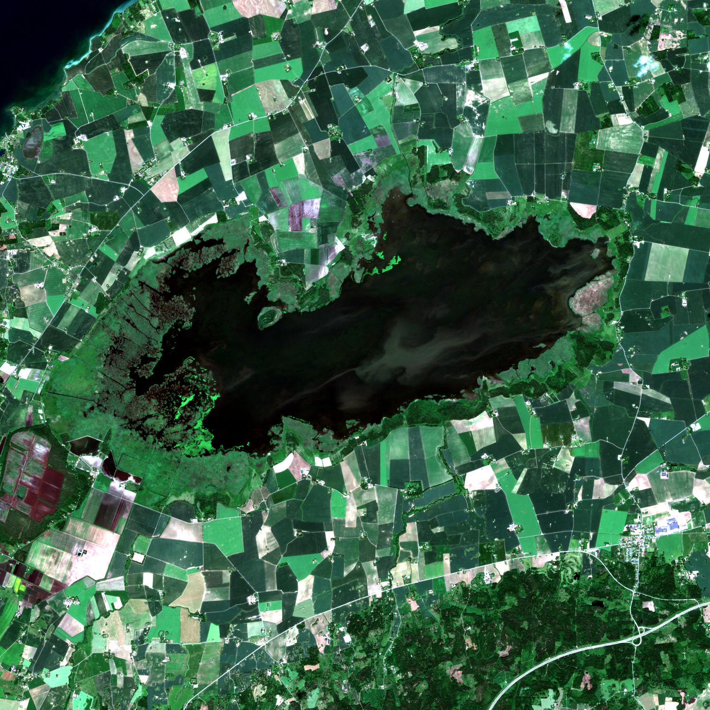
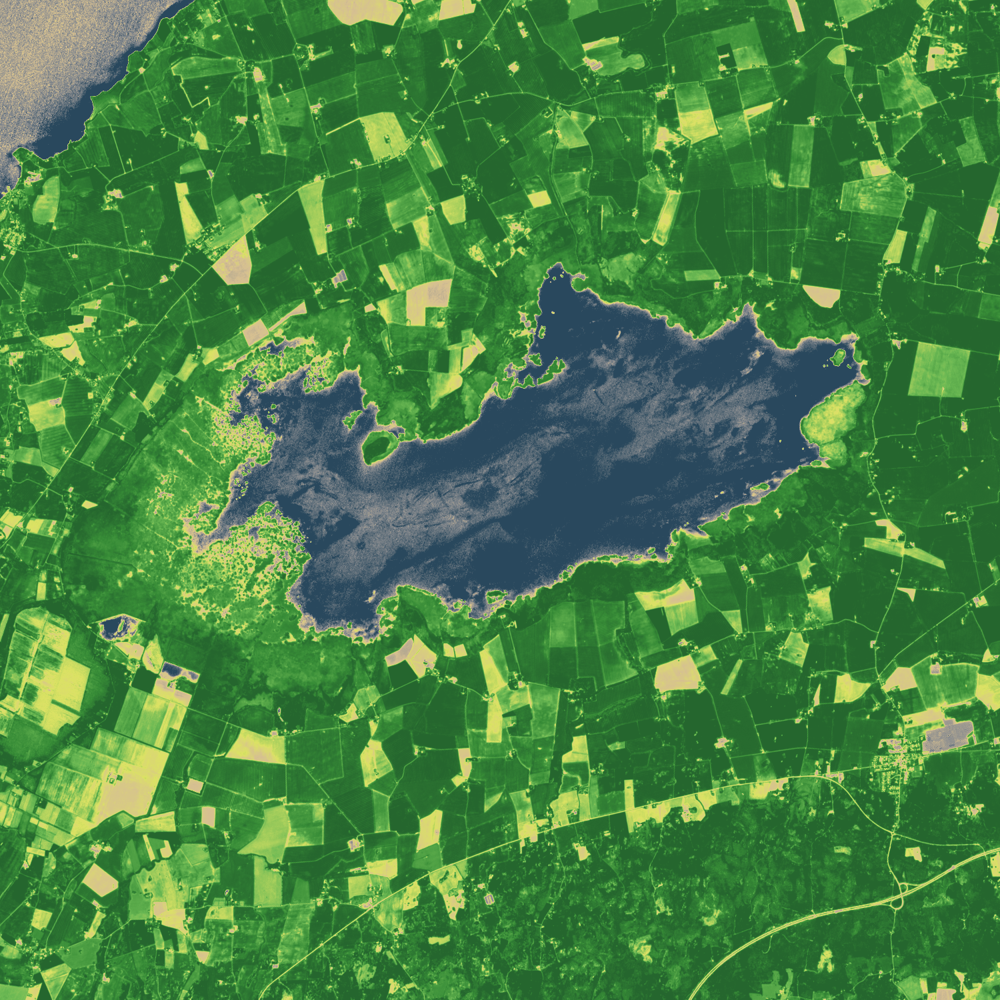
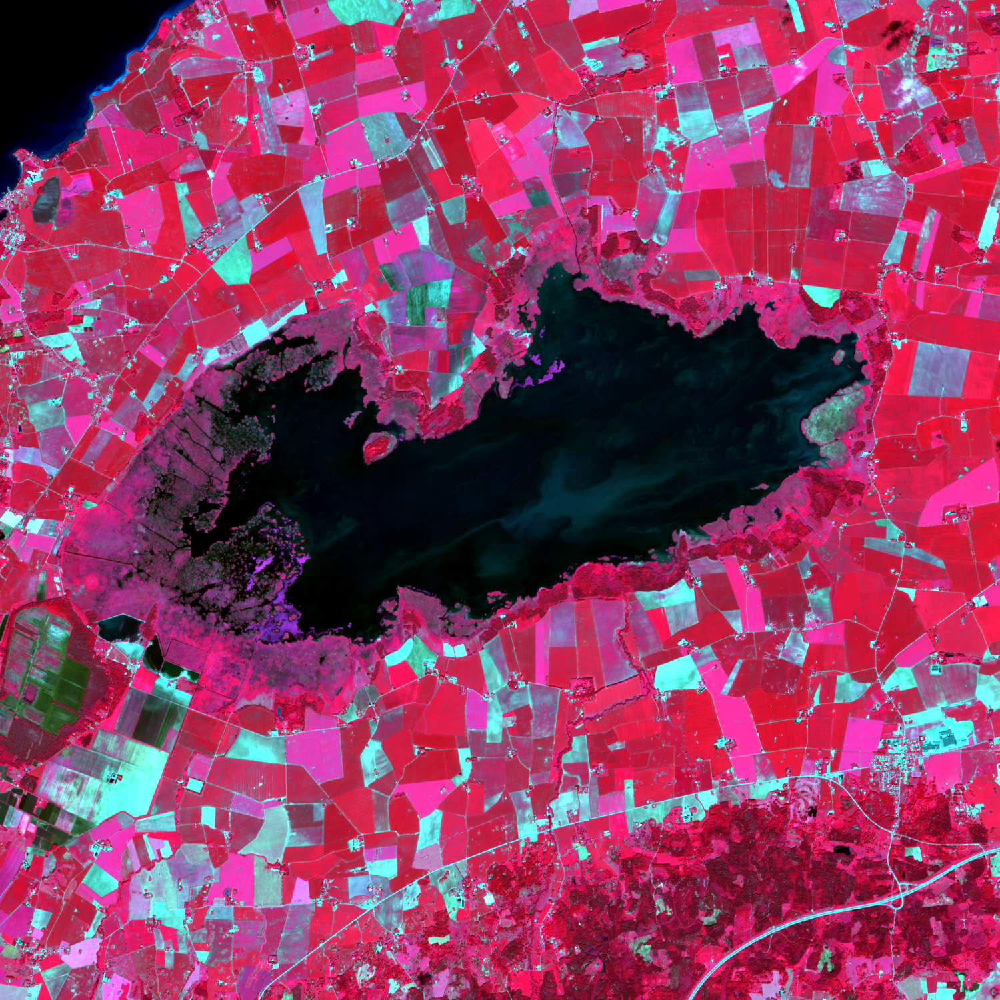
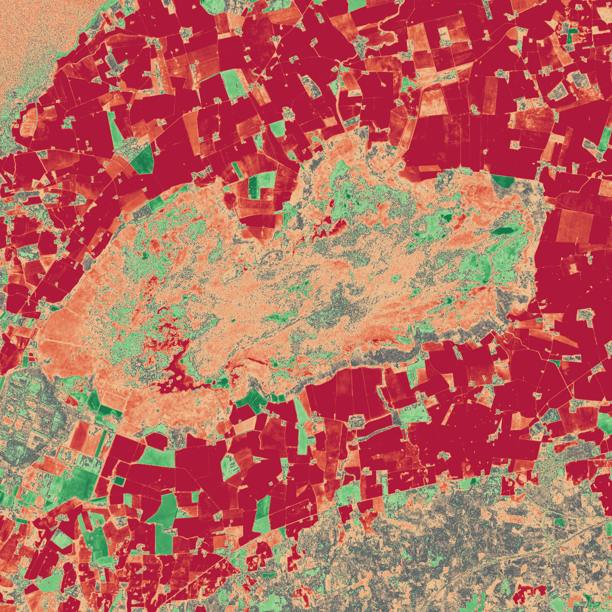

Modul 01 · Spektralindex & Fenologi
Starta Modul 1 ↗
Multitemporal Vegetationsförändring (NDVI & ΔNDVI)
Mäter säsongsdynamik, grödornas fenologiska mognad och skörd i södra och mellersta Sverige. Analysen jämför högsommar (juni/juli) mot sensommar/höst (augusti/september) genom att beräkna Normaliserat Differensvegetationsindex (NDVI) på autentisk Bottom-of-Atmosphere (BOA) ytreflektans.
NDVI = (B08 − B04) / (B08 + B04) | ΔNDVI = NDVI_B − NDVI_A
Nyckelinsikt: Jordbruksfälten runt Tåkern och i Skåne uppvisar en dramatisk NDVI-nedgång från ~0.85 (hög biomassa) till ~0.25 efter skörd. På Ölands alvar syns istället torrgräsvegetationens fuktkänslighet. Moln, molnskuggor och mättade pixlar maskeras automatiskt via Sentinel-2 Scene Classification Layer (SCL).

Sannfärg Juni 2024

NDVI Högsommartopp

Falskfärg NIR (B08-B04-B03)

ΔNDVI Förändring